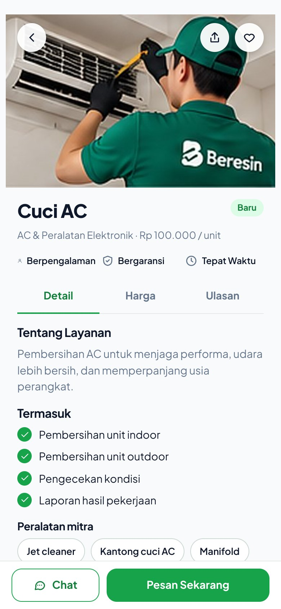
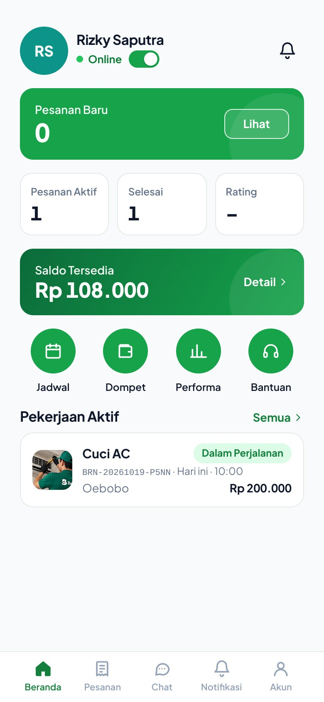

Urusan beres,
hidup lebih mudah.
Pesan mitra terverifikasi untuk servis AC, kebersihan, listrik & ledeng, renovasi, derek, pindahan, hingga bantuan harian. Pantau mitra di peta, setujui setiap biaya tambahan, dan bayar setelah pekerjaan beres.
- Mitra terverifikasi
- Harga transparan
- Bayar setelah beres
- Bergaransi
Satu aplikasi untuk rumah, kantor, kendaraan, dan proyek.
Setiap layanan punya formulir sendiri, estimasi harga yang jelas, dan ketentuan garansi yang tertulis sebelum Anda memesan.
Kebersihan & Sanitasi
Pembersihan Rumah, Deep Cleaning Kamar Mandi, Pembersihan Kantor/Ruko, dan lainnya.
Mulai Rp120.000AC & Peralatan Elektronik
Cuci AC, Isi Freon AC, Pasang AC Baru, dan lainnya.
Mulai Rp75.000Listrik & Perpipaan
Instalasi Titik Listrik, Perbaikan Korsleting, Perbaikan Pipa Bocor, dan lainnya.
Mulai Rp75.000Pertukangan, Instalasi & Renovasi
Pengecatan Dinding, Rakit & Pasang Furnitur, Perbaikan Atap / Plafon Bocor, dan lainnya.
Mulai Rp75.000Taman & Perawatan Luar Ruang
Potong Rumput, Pemangkasan Pohon.
Mulai Rp100.000Bantuan Kendaraan & Derek
Jumper Aki / Ganti Ban, Derek Kendaraan, Servis Motor Panggilan.
Mulai Rp75.000Pindahan, Angkut & Transportasi
Pindahan Rumah / Kos, Angkut Barang Pikap.
Mulai Rp150.000Komputer, Jaringan & Teknologi
Servis Komputer / Laptop, Pasang & Setel WiFi, Pasang CCTV.
Mulai Rp75.000Perawatan Hewan Peliharaan
Grooming & Mandi Hewan, Jaga & Ajak Jalan Hewan, Kunjungan Dokter Hewan.
Mulai Rp25.000Bantuan Harian & Rumah Tangga
Bantu Belanja & Antar, Asisten Rumah Tangga Harian, Pendamping Lansia (Non-medis).
Mulai Rp30.000Jasa Profesional & Kreatif
Fotografer Acara, Desain Grafis, Les Privat.
Mulai Rp75.000Layanan Bisnis & Komersial
Kontrak Kebersihan Bulanan, Perawatan AC Gedung, Kru Event & Setup Booth.
Mulai Rp50.000Dari pesan sampai beres, semuanya tercatat.
Pilih layanan
Isi detail pekerjaan, lokasi, dan jadwal. Estimasi harga & biaya perjalanan tampil sebelum Anda memesan.
Mitra terdekat menerima
Hanya mitra terverifikasi dengan keahlian, sertifikat, area, dan jadwal yang cocok yang mendapat tawaran.
Pantau & setujui
Lacak mitra di peta, terima laporan bergambar, dan setujui setiap biaya tambahan atau material.
Bayar setelah beres
Konfirmasi hasil, bayar lewat QRIS, virtual account, atau dompet digital, lalu beri ulasan.
Tahu persis kapan mitra tiba.
Lihat posisi mitra, jarak, dan perkiraan waktu tiba. Mitra dapat membagikan lokasi live lewat Google Maps, dan Anda bisa membagikan titik tepat lokasi Anda, ideal untuk bantuan kendaraan di jalan.
- Posisi live lewat Google Maps
- Navigasi langsung untuk mitra
- Notifikasi saat mitra berangkat & tiba

Tidak ada biaya diam-diam.
Pekerjaan tambahan, material, atau perubahan jadwal selalu diajukan sebagai penawaran rinci. Tanpa persetujuan Anda, tidak ada yang ditagihkan.
- Penawaran per item dengan harga satuan
- Proyek bisa dibayar per termin
- Garansi & pusat bantuan untuk setiap pesanan
Kerja lebih mudah, penghasilan lebih baik.
Terima pesanan sesuai keahlian, area, dan jam kerja Anda. Semua penawaran, laporan, dan pembayaran tercatat rapi di aplikasi.

Melayani Kota Kupang dan sekitarnya.
Biaya perjalanan dihitung dari jarak mitra ke lokasi Anda dan tidak pernah melebihi angka yang tampil saat memesan.
Pertanyaan yang sering diajukan
Bagaimana cara memesan layanan BERESIN?
Buka aplikasi, pilih layanan, isi detail pekerjaan, lokasi, dan jadwal. Estimasi biaya tampil sebelum Anda mengonfirmasi pesanan. Mitra terverifikasi terdekat yang memenuhi syarat akan menerima pesanan.
Kapan saya membayar?
Pembayaran dilakukan setelah pekerjaan selesai dan Anda konfirmasi. Untuk proyek panjang, Anda bisa memilih bayar per termin yang disepakati sebelum pekerjaan dimulai.
Apakah ada biaya tambahan?
Biaya tambahan, material, atau perubahan jadwal selalu diajukan sebagai penawaran rinci di aplikasi. Tanpa persetujuan Anda, tidak ada biaya tambahan yang ditagihkan.
Bagaimana saya tahu kapan mitra tiba?
Di halaman pesanan Anda dapat melihat posisi mitra, jarak, dan perkiraan waktu tiba. Mitra juga dapat membagikan lokasi live lewat Google Maps.
Apakah pekerjaan bergaransi?
Ya, sesuai jenis layanan. Contohnya cuci AC 7 hari dan pengecatan 14 hari sejak Anda mengonfirmasi selesai. Klaim garansi diajukan lewat halaman pesanan.
Bagaimana cara menjadi mitra BERESIN?
Pilih “Daftar Jadi Mitra”, isi data diri, keahlian, dan unggah dokumen verifikasi. Setelah diverifikasi, Anda dapat menerima pesanan sesuai keahlian, area, dan jadwal kerja Anda.
Wilayah mana saja yang dilayani?
Saat ini BERESIN melayani Kota Kupang (Alak, Kota Lama, Kota Raja, Oebobo, Kelapa Lima, Maulafa) serta sebagian Kabupaten Kupang.
Ada yang perlu dibereskan?
Pesan sekarang dan biarkan mitra terverifikasi BERESIN yang mengurusnya.